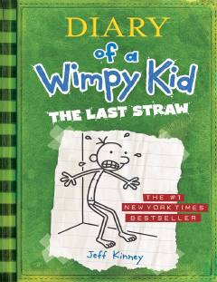

DOGreg Hefflining maktab va oilaviy hayotdagi kulgili sarguzashtlari davom etadi.
Greg Heffli maktab va uy hayotidagi qiziqarli hamda kulgili voqealarni o'z kundaligida bayon etadi. Bu qismda u otasining qat'iy tarbiya usullari va o'zining kundalik muammolari bilan kurashadi. Kitob o'quvchilarga yengil hazil va o'smirlik davrining qiyinchiliklarini kulgili tarzda taqdim etadi.